E3A-Polytech 2025 -- Physique-Chimie
Suivi medical d'un spationaute. Duree : 4 heures. Les calculatrices sont autorisees. Le sujet traite de differents phenomenes physico-chimiques en relation avec les examens medicaux des spationautes : pesee, test d'effort, osteodensitometrie et electrocardiogramme.
Partie 1 -- Se peser sur Terre et dans l'espace
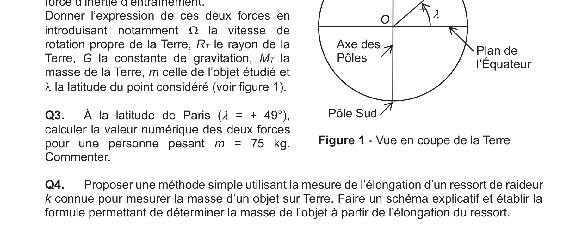
A) La pesanteur sur Terre
Definir le referentiel geocentrique et le referentiel terrestre. Decrire le mouvement du referentiel terrestre par rapport au referentiel geocentrique.
On considere le referentiel geocentrique galileen. Le poids d'un objet M de masse \(m\) situe a la surface de la Terre est defini dans le referentiel terrestre comme la somme de la force gravitationnelle et de la force d'inertie d'entrainement. Donner l'expression de ces deux forces en introduisant notamment \(\Omega\) la vitesse de rotation propre de la Terre, \(R_T\) le rayon de la Terre, \(G\) la constante de gravitation, \(M_T\) la masse de la Terre, \(m\) celle de l'objet etudie et \(\lambda\) la latitude du point considere.
A la latitude de Paris (\(\lambda = 49°\)), calculer la valeur numerique des deux forces pour une personne pesant \(m = 75\) kg. Commenter.
Proposer une methode simple utilisant la mesure de l'elongation d'un ressort de raideur \(k\) connue pour mesurer la masse d'un objet sur Terre. Faire un schema explicatif et etablir la formule permettant de determiner la masse de l'objet a partir de l'elongation du ressort.
B) La pesanteur dans la Station Spatiale Internationale (ISS)
Determiner l'expression de la vitesse d'un satellite comme l'ISS, de centre d'inertie S et de masse \(M_S\) tournant autour de la Terre a l'altitude \(h\). On assimilera le satellite a un point materiel en orbite circulaire. Verifier la vitesse annoncee pour l'ISS. Quelle est la periode de revolution de l'ISS autour de la Terre ?
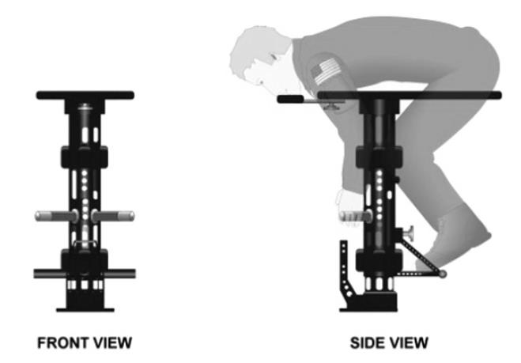
Dans le referentiel de l'ISS, le spationaute de masse \(m = 75\) kg "flotte" sans bouger ni toucher les parois. Donner l'expression de la force gravitationnelle et de la force d'inertie d'entrainement. Faire l'application numerique de la somme de ces deux forces dans le cas ou le spationaute est situe au centre de gravite S de la station spatiale et justifier que le spationaute est en impesanteur.
C) Se peser dans la station spatiale
Expliquer pourquoi la methode proposee a la question Q4 ne peut pas convenir pour peser un spationaute dans l'ISS.
Le spationaute M de masse \(m_2\) s'accroche a un dispositif appele BMMD de masse mobile \(m_1 = 12{,}43\) kg. Ce dispositif inclut un ressort de raideur \(k\), et on note \(m\) la masse totale. On neglige les frottements. Determiner la relation entre la periode propre et la masse \(m\).
Si la periode d'oscillation pour le dispositif a vide vaut \(T_1 = 0{,}82\) s et celle avec le spationaute qui s'y accroche vaut \(T = 2{,}15\) s, determiner la formule litterale, puis la valeur numerique de la masse \(m_2\) du spationaute.
L'utilisation du BMMD exige du spationaute qu'il se maintienne fortement a la barre, que ses pieds et ses genoux soient coinces et son menton colle a la planche. Expliquer pourquoi.
Partie 2 -- Test d'effort et dosage de l'acide lactique
A) CEVIS, le velo de l'ISS
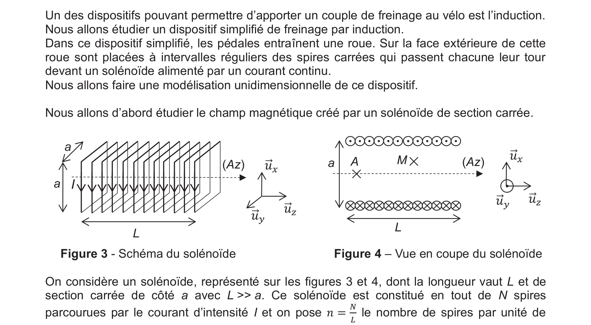
A partir du modele du solenoide infini, montrer que le champ magnetique peut s'ecrire \(\vec{B}(M) = B(x,y)\,\vec{u}_z\), puis determiner l'expression du champ magnetique a l'interieur du solenoide, sous la forme \(\vec{B}_{\text{int}}(M) = B_0\,\vec{u}_z\), ou \(B_0\) est une constante a exprimer.
On etudie une spire carree de cote \(a\) qui passe a la vitesse \(\vec{v}_0 = v_0\,\vec{u}_x\) imposee en face du solenoide reel. Expliquer qualitativement pourquoi il apparait une intensite \(i\) dans la spire. La spire ayant une resistance interne \(R\), determiner cette intensite \(i\) pendant toute la phase ou la spire entre dans la zone grisee.
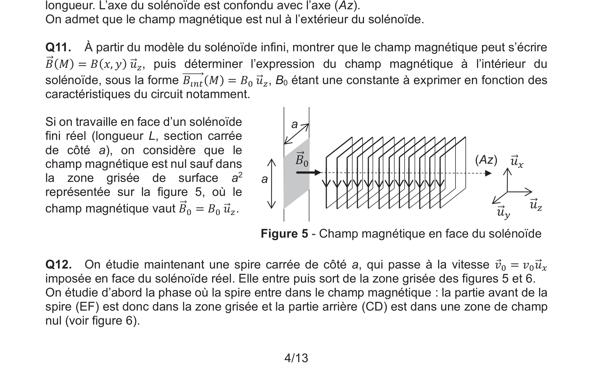
En deduire qu'il s'exerce une force constante sur la spire pendant cette phase d'entree dans la zone grisee, dont on donnera l'expression en fonction de \(B_0\), \(a\), \(R\) et de \(v_0\). Justifier qualitativement le sens de cette force.
Montrer que la force exercee sur la spire pendant la phase de sortie de la zone grisee vaut \(\vec{F} = -\dfrac{B_0^2 a^2}{R}\,v_0\,\vec{u}_x\).
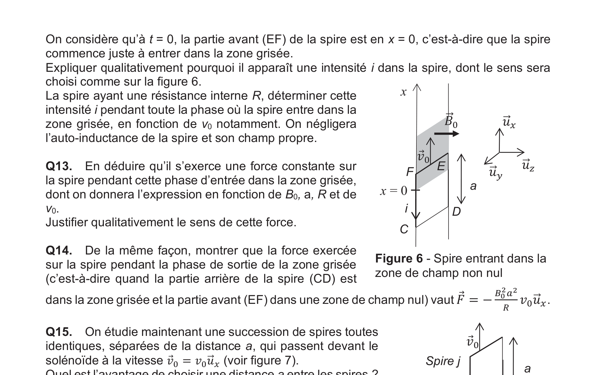
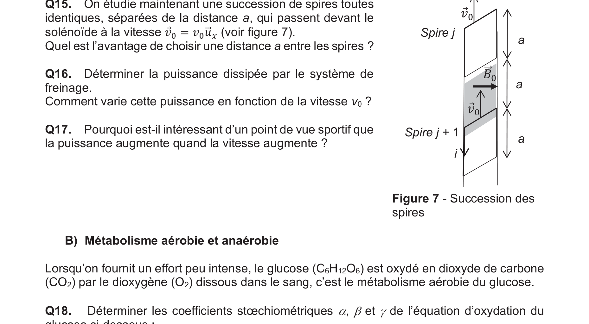
On etudie une succession de spires toutes identiques, separees de la distance \(a\), qui passent devant le solenoide. Quel est l'avantage de choisir une distance \(a\) entre les spires ?
Determiner la puissance dissipee par le systeme de freinage. Comment varie cette puissance en fonction de la vitesse \(v_0\) ?
Pourquoi est-il interessant d'un point de vue sportif que la puissance augmente quand la vitesse augmente ?
B) Metabolisme aerobie et anaerobie
Determiner les coefficients stoechiometriques \(\alpha\), \(\beta\) et \(\gamma\) de l'equation d'oxydation du glucose : $$\text{C}_6\text{H}_{12}\text{O}_6\text{(aq)} + \alpha\;\text{O}_2\text{(g)} = \beta\;\text{CO}_2\text{(g)} + \gamma\;\text{H}_2\text{O(l)}$$
Determiner l'expression, puis calculer l'enthalpie standard de cette reaction, supposee independante de la temperature. La reaction est-elle endothermique ou exothermique ? Commenter.
Quel est le volume d'air a 21 % de dioxygene (considere comme un gaz parfait a la pression \(P = 1{,}0\) bar et la temperature \(T = 293\) K) necessaire pour produire les \(2{,}5 \times 10^3\) kJ consommes pendant une heure de sport ? Quelle est dans ce cas la masse de glucose consommee ?
Comparer l'energie produite par l'utilisation d'une mole de glucose suivant le metabolisme aerobie d'une part et le metabolisme anaerobie d'autre part. Commenter.
C) Acide lactique dans le sang
Determiner les concentrations en \(\text{H}_2\text{CO}_3\) et en \(\text{HCO}_3^-\) dans le sang dans les conditions habituelles (pH = 7,4 et \(C_t = 0{,}0275\) mol/L).
Faire un diagramme de predominance dans lequel apparaissent les differentes especes mises en jeu (\(\text{H}_2\text{CO}_3\), \(\text{HCO}_3^-\), HLa, \(\text{La}^-\)). Ecrire l'equation de la reaction de l'acide lactique avec l'ion \(\text{HCO}_3^-\). Exprimer et calculer la constante d'equilibre.
Calculer le pH apres un effort qui a porte la concentration initiale d'acide lactique dans le sang a \(C_0' = 2{,}0 \times 10^{-3}\) mol/L. L'hypothese de la reaction suffisamment avancee est-elle justifiee a posteriori ? Commenter la valeur du pH.
D) Titrage de l'acide lactique
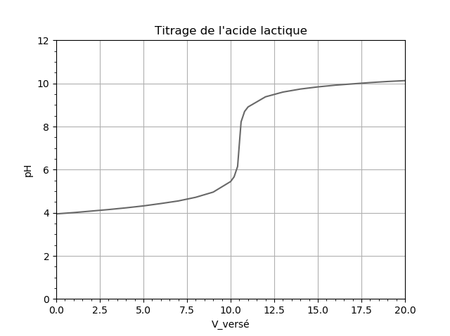
Ecrire l'equation de la reaction de titrage de l'acide lactique par la soude. Exprimer et calculer la constante d'equilibre. Faire un schema annote du montage a realiser.
Determiner la concentration \(C\) d'acide lactique dans la solution S, puis la concentration \(C_0\) d'acide lactique dans le sang preleve. Le patient est-il en acidose lactique ?
Parmi les indicateurs colores proposes (rouge congo, rouge de phenol, thymolphtaleine), le(s)quel(s) peut-on utiliser pour suivre le titrage ? Justifier.
E) Elimination de l'acide lactique du sang
En supposant que la reaction de degradation de l'acide lactique est d'ordre 1, determiner l'expression de l'evolution de [HLa] en fonction du temps. En utilisant les valeurs du tableau, verifier si les mesures sont compatibles avec une reaction d'ordre 1.
Ecrire le script Python permettant de definir le pas \(p\) connaissant \(D_t\) et \(N\), puis la liste L_t dont les elements sont les dates des instants ou la concentration va etre calculee.
Si on note \(C_i\) la concentration d'acide lactique a l'instant \(t_i\), determiner l'expression de \(C_{i+1}\) en fonction de \(C_i\), \(p = t_{i+1} - t_i\), et des coefficients \(\alpha\), \(\beta\) et \(\gamma\).
Ecrire un script Python utilisant la methode d'Euler explicite et permettant de definir la liste L_C dont les elements sont les concentrations \(C_i\) aux differentes dates.
Partie 3 -- Osteodensitometrie
A) Propagation d'une onde electromagnetique dans le vide
Ecrire les equations de Maxwell dans le vide, en precisant leurs noms.
En deduire l'equation d'onde verifiee par le champ electrique \(\vec{E}\). En deduire la relation de dispersion pour une onde electromagnetique dont le champ electrique s'ecrit \(\vec{E}(x,t) = E_0 \exp(i(\omega t - kx))\,\vec{u}_z\). Suivant quelle direction se propage cette onde ? Quelle est sa polarisation ?
Les rayons X utilises dans l'osteodensitometrie ont une energie de 40 et 70 keV. Determiner l'energie en J des rayons de 40 keV, puis leur frequence et leur longueur d'onde.
B) Propagation dans un conducteur ohmique, epaisseur de peau
Ecrire les equations de Maxwell dans le conducteur ohmique. On va travailler en regime lentement variable (ARQS). Quel terme des equations de Maxwell est alors neglige ?
En deduire l'equation d'onde verifiee par le champ electrique dans le conducteur ohmique. Preciser le nom de ce type d'equation.
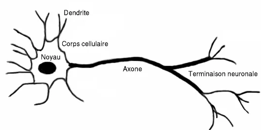
Pour une onde \(\vec{E}(x,t) = E_0 \exp(i(\omega t - kx))\,\vec{u}_z\), avec \(k\) complexe, determiner l'expression de \(k^2\). Determiner \(k_1\) (partie reelle) et \(k_2\) (partie imaginaire). Introduire l'epaisseur de peau \(\delta\) et donner son expression.
Donner l'expression du vecteur de Poynting \(\vec{\Pi}\) en fonction des champs electrique et magnetique. Donner la signification physique de sa moyenne \(\langle \vec{\Pi}(x,t) \rangle\).
C) Application a l'osteodensitometrie
L'epaisseur de peau \(\delta\) depend de la longueur d'onde et de la densite osseuse \(d\). Pour le rayonnement d'energie 40 keV, \(\delta_1 = \dfrac{\alpha_1}{\sqrt{d}}\) et pour 70 keV, \(\delta_2 = \dfrac{\alpha_2}{\sqrt{d}}\). On mesure les puissances transmises \(P_{L1}\) et \(P_{L2}\). Proposer une methode permettant de determiner la densite osseuse \(d\) a partir de ces mesures.
Partie 4 -- Electrocardiogramme
A) Fonctionnement electrique d'un nerf
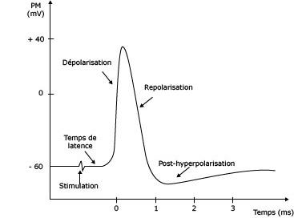
On modelise un axone par un cylindre infiniment long de rayon interieur \(a\), constitue d'une membrane d'epaisseur \(b\) et de permittivite \(\varepsilon_r\). Montrer que le champ electrique \(\vec{E}(M)\) dans la membrane ne depend que de \(r\) et qu'il est porte par \(\vec{u}_r\). En appliquant le theoreme de Gauss, determiner l'expression de \(\vec{E}(M)\) en fonction de \(\sigma\), \(\varepsilon_0 \varepsilon_r\), \(a\) et \(r\).
Determiner l'expression du potentiel \(V(M)\) en fonction de \(\sigma\), \(\varepsilon_0 \varepsilon_r\), \(a\), \(r\) et de \(V_A\). En deduire que la charge surfacique \(\sigma = \dfrac{\varepsilon_0 \varepsilon_r (V_A - V_E)}{a \ln\!\left(\frac{a+b}{a}\right)}\).
En utilisant \(a \gg b\), simplifier l'ecriture de \(\sigma\) puis montrer que \(\|\vec{E}(M)\| = \left|\dfrac{V_A - V_E}{b}\right|\). Quelle est la charge \(Q\) portee par la face interieure d'une longueur \(L\) de membrane ?
En utilisant \(Q = C(V_A - V_E)\), determiner l'expression de la capacite de la membrane pour une longueur \(L\), puis sa capacite par unite de surface \(c_m\). Verifier que \(c_m = 10^{-2}\) F/m\(^2\) est compatible avec les donnees. Sachant que \(V_A - V_E = -60\) mV, determiner numeriquement \(\sigma\) et \(\vec{E}(M)\).
B) Realisation et exploitation d'un electrocardiogramme
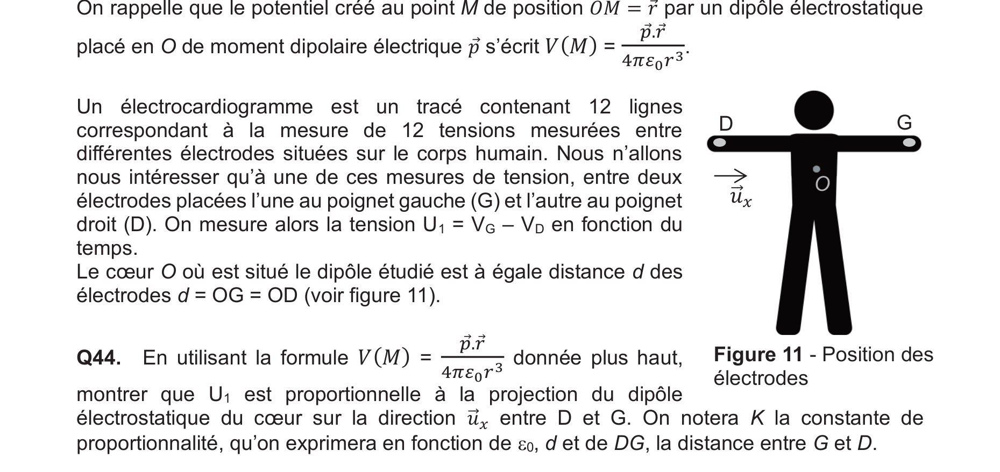
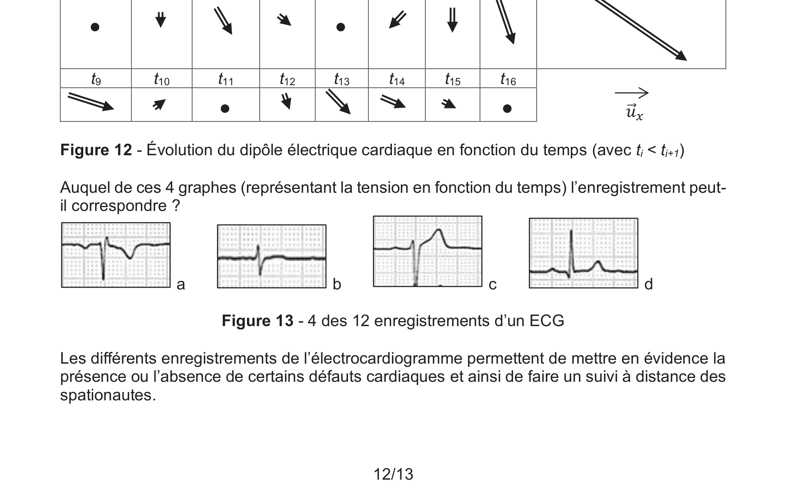
Le potentiel cree au point M par un dipole electrostatique place en O de moment dipolaire \(\vec{p}\) s'ecrit \(V(M) = \dfrac{\vec{p}\cdot\vec{r}}{4\pi\varepsilon_0 r^3}\). Montrer que \(U_1 = V_G - V_D\) est proportionnelle a la projection du dipole electrostatique du coeur sur la direction \(\vec{u}_x\) entre D et G. On notera \(K\) la constante de proportionnalite.
On donne l'evolution du dipole electrique cardiaque a differents instants \(t_i\) successifs pendant un cycle cardiaque. Determiner auquel des 4 graphes proposes l'enregistrement peut correspondre.